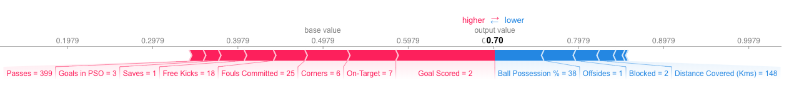
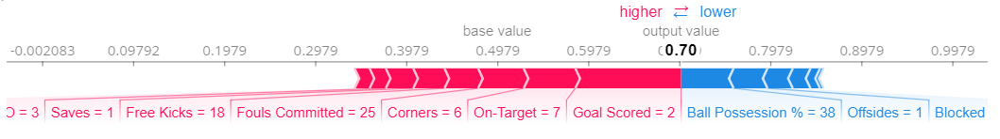
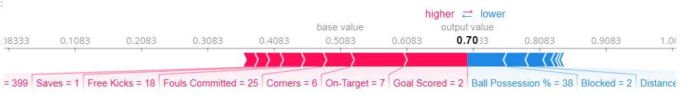

机器学习可解释性之SHAP值 SHAP Values
本篇翻译自Kaggle机器学习可解释性微公开课🎓，本篇时第四课时，主讲利用SHAP(SHapley Additive exPlanations)值用以在一次独立预测中分解模型。
Check source at Kaggle by Dan Becker, translate by waynehfut
简介
你已经看到（或使用了）从机器学习中提前常规洞察的相关技术。但是如果你想在一次独立预测中分解模型的话该怎么做呢？
SHAP值(Shapley加法解释的缩写)可以分解预测结果以展示每个值的影响。那么他可以用在什么地方呢？
- 一个模型说银行不应当贷款给某个人，同时法律要求银行需要每次解释拒绝贷款的缘由时。
- 一个健康服务机构想确定哪些因素导致每个患者患有某种疾病的风险，从而他们可以有针对性的健康干预并直接解决掉这些风险因素。
你将在这节课程中使用SHAP值来解释单个预测。在下一节课中，你还将看到它如何与其他模型级的洞察方法结合。
如何运作
SHAP值解释了对于给定特征具有某些特定值所产生的影响，并与我们在该特征具有某些基线值时所作的预测进行比较。
一个示例将有利于理解，我们本节仍将使用前文排列重要性和部分依赖图所使用的足球/橄榄球的例子。
在之前的课程中，我们预测了球队是否会有对于获得最佳球员奖。
我们也许会问：
- 如果球队打入了3球会怎样推动预测结果？
其实这个问题可以更加具体，量化的回答可以被重写为：
- 如果球队打入了3球而不是一些基准进球数这一事实将会怎样推动预测结果？
当然，每个队伍都会有很多的特征。因此我们如果回答进球数这个问题，我们也可以为所有其他功能重复此过程。
SHAP值将以保证良好属性的方式执行此操作。当我们进行如下的预测时： sum(SHAP values for all features) = pred_for_team - pred_for_baseline_values 也就是说，所有特征的SHAP值是对为什么预测与基线不同的一个求和。这也允许我们将预测分解为下图：

那如何理解这些呢？
当我们作出0.7的预测时(即该队有70%概率获得最佳球员，waynehfut注)，与此同时基线值是0.4979。特征值导致预测值的增长的由粉色区域标出，而它的视觉尺寸大小衡量了特征的影响。特征导致的降低效果由蓝色区域标出。影响力最大的值是来自于Goal Scored为2。与此同时控球率具有降低预测结果的效果。
如果从粉红条的长度中减去蓝条的长度，则它等于从基值到结果的距离。
这项技术仍有一些复杂性，为了确保基线加上各个独立预测的总和相加的值与预测值相等(听上去似乎不是那么简单)。我们将不会在这里讨论细节，因为这个技术并不重要，欲知详情可以在这个博文中得到解释
计算SHAP值的代码
我们将使用优秀的Shap库来计算SHAP值。
例如，我们将重用你已经看过所有数据的模型。
1 | import numpy as np |
我们将查看数据集中单列数据的SHAP值（我们随机选择第五行）。对于其中内容，我们在查看SHAP值之前先看原始预测值。
1 | row_to_show = 5 |
array([[0.3, 0.7]])
这个队伍有70%的概率获得这个奖项。
接着我们来关注下单次预测的SHAP值
1 | import shap # 导入计算shap值的包 |
上述的shap_values是一个有两个数组的列对象。第一个数组SHAP值表示负面的输出（无法获得奖），SHAP值的第二个数组是代表了正面的输出（赢得比赛）。我们通常会考虑预测积极结果的预测，因此我们将把所有SHAP值的积极输出提出（使用shap_values[1]）
查看原始数组很麻烦，但是shap包有一个可视化结果的好方法。
1 | shap.initjs() |
Out：

如果你仔细的查看创建SHAP值的代码，你将会注意到我们参考了shap.TreeExplainer(my_model)中的树。但是SHAP包已经解释了模型的每种类型。
shap.DeepExplainer在深度模型中有效果shap.KernelExplainer在所有模型中都有效，但他比其他的解释器慢了一些，且他提供了近似值而不是准确值
下面提供了一个使用KernelExplainer的例子以获取相似的结果。结果值不是完全一致，因为KernelExplainer给出了一个近似的结果。但是结果值表示的意思是一致的。
1 | # 使用SHAP核解释测试集预测结果 |
